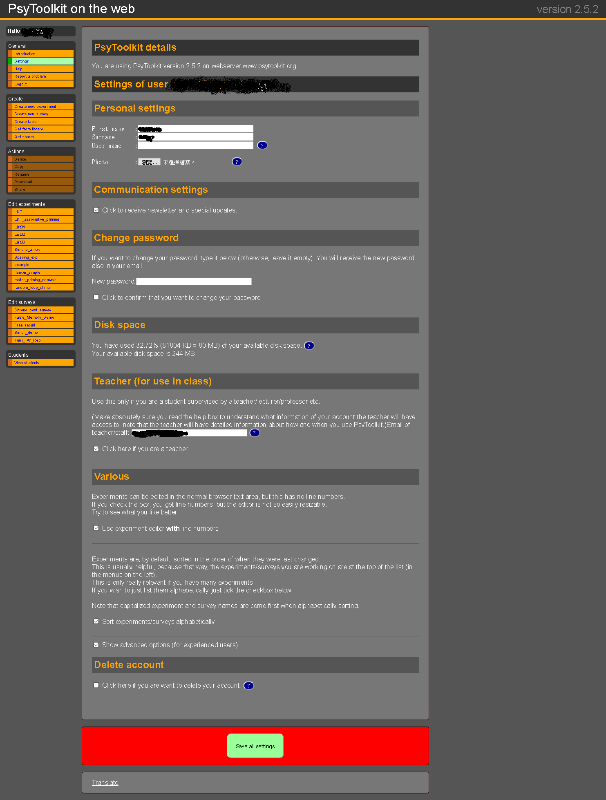
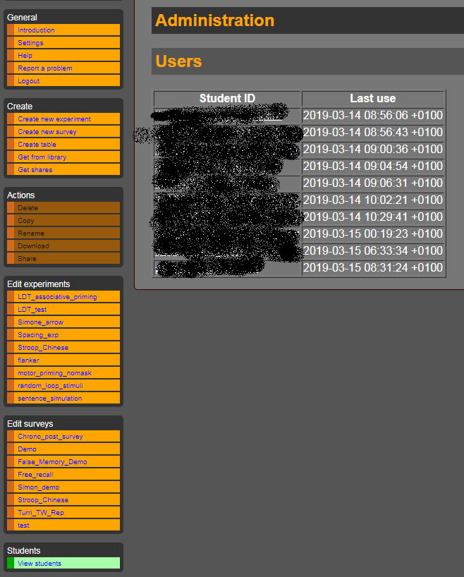
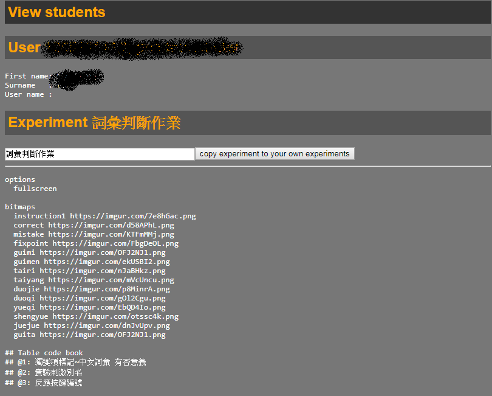

PsyToolkit 開工預備
開發者資訊
註冊/登入畫面介紹

2020年春季登入畫面截圖。實際畫面以官方網站為準。
左側常駐功能列
General
Psytoolkit版本資訊；帳號設定；求助；詢問；登出。
Create
建立實驗腳本；建立問卷腳本；建立實驗刺激列表；取得官方腳本；取得其他使用者實驗腳本。
Actions
己建腳本可執行的管理動作。刪除正在編輯的腳本；拷貝其他腳本至正在編輯腳本；更改正在編輯的腳本名稱；下載正在編輯的腳本；分享正在編輯腳本給其他使用者(目前只限實驗腳本)。
帳號設定畫面(Settings)

重要設定項目見以下說明
- Disk space 帳號資料已用儲存空間資料
- Teacher(for use in calss)
使用者是學生，可在此填入教師註冊psytoolkit的e-mail帳號。
使用者是老師，可勾選Click here if you are a teacher.，開啟學生活動檢視頁面。 - Various 進階設定。腳本編輯視窗顯示行號；已編輯腳本排序方式；腳本編輯畫面起始設定。
教師線上協助
小提示：psytoolkit的腳本名稱必須為英文
使用者如果有教師協助學習，可在帳號設定加入教師的psytoolkit帳號。之後教師可從自已的登入畫面，瀏覽及複製學生編輯的實驗腳本，協助學生排助遇到的問題。
由於問卷腳本執行核心不同於實驗腳本，網站尚未提供線上批改。有需要的老師與學生建議使用其他協作平台如google doc, HackMD作業。
當學生在psytoolkit帳號設定加入教師的帳號之後，教師從View students連結查看學生帳號清單，每個學生帳號連結到學生已建立的實驗腳本活動頁面。

為保護學生個人資訊隱私，帳號採噴霧處理。
有學生告知教師問題，教師可登入該學生的活動頁面，觀看學生的已建立的腳本清單。下方截圖是其中一位學生已建立的實驗腳本清單，Activity之下未擷圖部分是學生的帳號活動紀錄。

為保護學生個人資訊隱私，帳號資訊採噴霧處理。
「詞彙判斷作業」是教師指派的作業，教師可進入以下截圖頁面，複製腳本至教師帳號檢查，再回覆學生解決問題的方法。

為保護學生個人資訊隱私，帳號資訊採噴霧處理。
其他介紹
- 佛光大學周蔚倫老師製作的教學示範影片
下一步：線上問卷
參考文獻
Stoet, G. (2017). PsyToolkit: A Novel Web-Based
Method for Running Online Questionnaires and
Reaction-Time Experiments. Teaching of Psychology,
44(1), 24–31. https://doi.org/10.1177/0098628316677643

本網站由慈濟大學人類發展與心理學系副教授陳紹慶創建維護，網站內容採用創用 CC 姓名標示-非商業性 4.0 國際 授權條款授權.